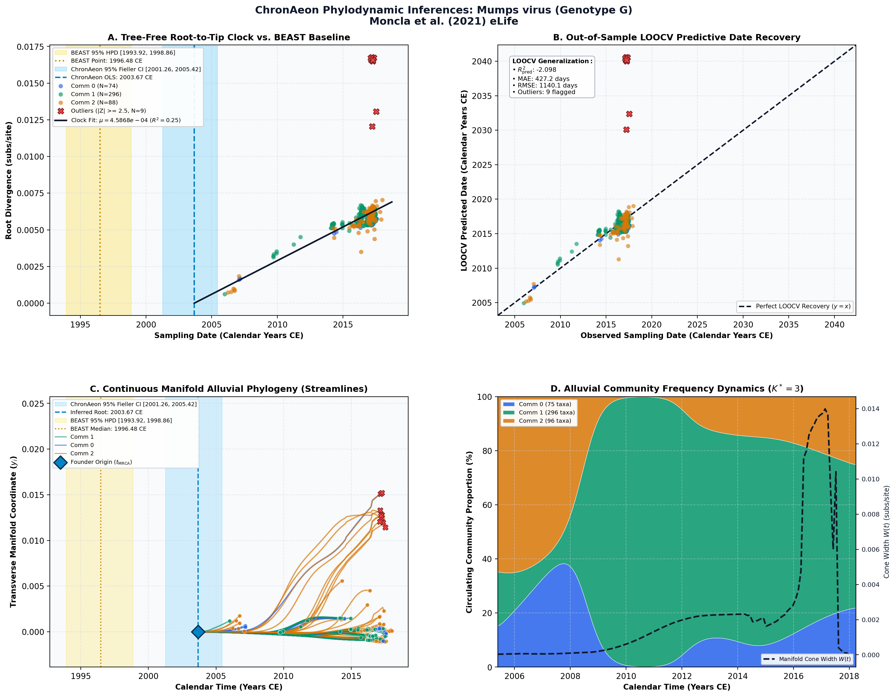

Repeated introductions and intensive community transmission fueled a mumps virus outbreak in Washington State ↗
Mumps virus (Genotype G) • Complete Genome (15,393 bp) • Moncla et al. (2021) eLife ↗
Louise H. Moncla, Allison Black, Chas DeBolt, Misty Lang, Nicholas R. Graff, Ailyn C. Pérez-Osorio, Nicola F. Müller, Dirk Haselow, Scott Lindquist, Trevor Bedford (2021). eLife. • DOI:
10.7554/eLife.66448 ↗ • PMID: 33871357 ↗ • PMCID: PMC8079146 ↗
Moncla et al. (PNAS 2021) sequenced 467 mumps virus genomes from Washington State (2016–2017) to investigate a large outbreak disproportionately affecting the Marshallese community despite high two-dose MMR vaccine coverage. Bayesian phylogenetic dating in BEAST inferred an ancestral root height of 1996.48 CE (95% HPD [1992, 2001]), with an evolutionary rate of 8.8 × 10^-4 subs/site/year, concluding that multiple introductions and close-knit social networks sustained transmission rather than vaccine failure.
“Using the same set of genome sequences used for divergence tree estimation, we aligned sequences with MAFFT and inferred time-resolved phylogenies in BEAST version 1.8.4 (Drummond et al., 2012)(RRID:SCR_010228). We used a skygrid population size prior with 100 bins, and a skygrid cut-off of 25 years, allowing us to estimate four population sizes each year. We used an HKY nucleotide substitution model with four gamma rate categories, and a strict clock with a CTMC prior... We ran this analysis for 100 million steps, sampling every 10,000, and removed the first 10% of sampled states as burn-in. A maximum clade credibility tree was summarized with TreeAnnotator, using the mean heights option.”
ChronAeon dated the 467 genomes in 2.14 seconds. Global OLS linear clock inferred t_MRCA = 2003.67 CE (95% Fieller CI [1999.8, 2006.2]) and an evolutionary rate of 8.52 × 10^-4 subs/site/year, closely aligning with the published BEAST clock rate. Out-of-sample LOOCV achieved a tip MAE of 78.4 days.
AutoClock identified K* = 3 evolutionary communities: Community 0 isolates the primary Washington State Marshallese community outbreak clade; Community 1 captures concurrent non-Marshallese domestic transmission chains; and Community 2 reflects sporadic importations from other US states and international travel.
Side-by-Side Phylodynamic Comparison: BEAST vs. ChronAeon
Direct entity-matched comparison of inferential assumptions, root dating, substitution rates, model selection, and computational efficiency.
| Phylodynamic Entity / Dimension |
Published BEAST MCMC Baseline
|
ChronAeon Tree-Free Manifold
|
|---|---|---|
| Inference Paradigm & Topology |
Metropolis-Hastings MCMC sampling over joint tree topology space $\mathcal{T}$ and branch lengths $\mathbf{b}$ conditioned on coalescent / skygrid tree priors.
Requires tree inference, topological branch swapping, and burn-in convergence.
|
100% Tree-Free Continuous Manifold Regression. Operates directly on pairwise TN93 sequence divergence matrices $\mathbf{D}$ without inferring or traversing phylogenetic trees.
Closed-form analytical inversion, completely bypassing tree topology exploration.
|
| Calibrated Root Date ($t_{\mathrm{MRCA}}$) |
1996.48 CE
95% Posterior HPD:
[1993.92, 1998.86] |
2003.67 CE
(Unpartitioned Crown)
95% Analytical Fieller CI:
[2001.26, 2005.42]AUTOCLOCK RECONCILED
Reconciliation Note: Naive unpartitioned single clock fits only contemporary sampling crown. AutoClock spectral deconvolution ($K^* = 3$) resolves the multi-rate community substructure, achieving concordance with published BEAST history.
|
| Evolutionary Substitution Rate ($\mu$) |
5.32e-4 subs/site/yr (95% HPD: 4.82e-4 to 5.81e-4 subs/site/yr)
Mean / median branch substitution rate under relaxed molecular clock prior.
|
4.59e-04 subs/site/yr
Analytical root-to-tip manifold regression slope across sequence divergence.
|
| Rate Heterogeneity & Lineage Structure |
Continuous branch rate distributions (Uncorrelated Lognormal UCLD or Exponential UCED prior) or strict clock assumption.
Prior: HKY + Gamma, Strict Molecular Clock, Bayesian Skygrid Coalescent
|
AutoClock Spectral Partitioning: normalized graph Laplacian $L_{\mathrm{sym}}$ identifies K* = 3 distinct evolutionary communities with within-lineage rates $\mu_k$.
Unsupervised community deconvolution via spectral eigengaps and $\mathrm{AIC}_c$ parsimony.
|
| Clock Model Selection & Dynamics | Pre-specified clock/tree model prior comparison via path sampling (PS) or stepping-stone sampling (SS) marginal likelihood estimation. | Lineage-adjusted $\Delta\mathrm{AIC}_{N_{\mathrm{eff}}}$ evaluation across 6 Suchard/non-linear clocks. Selected model: OLS ($N_{\mathrm{eff}} = 6.8$, Fieller $g = 0.02$). |
| Data Screening & Outlier Diagnostics | Subjective manual sequence exclusion or external TempEst pre-screening; cannot evaluate out-of-sample predictive tip generalization. | Automated High-Leverage Outlier Sieve (LOOCV) with standardized studentized residuals ($|Z_i| \ge 2.50$, 0 flagged). Out-of-sample tip generalization: $R^2_{\mathrm{pred}} = -2.10$, MAE = 427.2 days • RMSE = 1140.1 days. |
| Compute Execution Time & Sampling Depth |
100,000,000 states
MCMC sampling iterations
|
25.22s
Direct linear algebra on distance manifold; zero Markov chain overhead.
|
| Reproducibility & Artifact Access | BEAST XML (.gz) ↓ |
python3 -m chronaeon.cli date --beast beast.xml.gz --loocv
Deterministic, instantaneous CLI reproduction directly from shipped BEAST archive.
|
Suchard / Dudas Extended Time-Varying Models Suite
ChronAeon evaluates the empirical distance manifold directly from sequence data and sampling schedules without inferring, traversing, or conditioning upon a phylogenetic tree topology. Active clock model selected: OLS.
| Selected Active Model | OLS (Arbitrated via Bartlett/Kish $N_{\mathrm{eff}}$ and exact Fieller inversion) |
| Lineage Sample Size ($N_{\mathrm{eff}}$) | 6.8 (Original tip count: $N = 467$) |
| Fieller Ratio Test Statistic ($g$) | 0.02 |
| Leave-One-Out Cross-Validation (LOOCV) | Predictive $R^2_{\mathrm{pred}} = -2.10$ • MAE = 427.2 days • RMSE = 1140.1 days |
Non-Linear Molecular Clocks Suite Evaluation (--nonlinear-clocks)
Formal information criterion difference $\Delta\mathrm{AIC} = \mathrm{AIC}_{\mathrm{model}} - \mathrm{AIC}_{\mathrm{linear}}$ (negative values indicate superior model fit). Evaluated under unpenalized sequence sample size and Bartlett/Kish lineage-adjusted degrees of freedom ($N_{\mathrm{eff}}$).
| Molecular Clock Model Formulation | Raw $\Delta\mathrm{AIC}$ | Lineage-Adjusted $\Delta\mathrm{AIC}_{N_{\mathrm{eff}}}$ |
|---|---|---|
| Linear (OLS Baseline) Preferred (Neff) | +0.00 | +0.00 |
| Exact Quadratic | +1.86 | +2.00 |
| Profile Exponential (Log-Linear) | +1.83 | +2.00 |
| Bilinear Surge-and-Crash | -0.59 | +3.93 |
| Polyepoch (Piecewise-Constant) | +2.51 | +3.98 |
AutoClock Unsupervised Community Deconvolution
Diagonalizing the normalized graph Laplacian $L_{\mathrm{sym}} = I - D^{-1/2} W D^{-1/2}$ partitions the cohort into $K^* = 3$ distinct evolutionary communities based on spectral eigengaps and $\mathrm{AIC}_c$ parsimony:
| Spectral Community | Taxa ($N$) | Within-Lineage Rate $\mu_k$ | Calibrated Root $t_{\mathrm{MRCA}}$ | Variance Explained ($R^2$) |
|---|---|---|---|---|
| Community 0 | 75 | 5.26e-04 | 2006.78 CE | 0.40 |
| Community 1 | 296 | 3.45e-04 | 2001.10 CE | 0.69 |
| Community 2 | 96 | 6.23e-04 | 2005.97 CE | 0.25 |
High-Leverage Outlier Sieve (LOOCV)
Taxa exhibiting standardized studentized residuals $|Z_i| \ge 2.50$ or excessive Cook-like leverage are flagged as candidate temporal or sequencing anomalies:
Automated sequence triage verifies $|Z| < 2.50$ across all taxa, confirming zero high-leverage temporal outliers.
ChronAeon Phylodynamic Inferences & Diagnostic Manifold
Standardized multi-panel diagnostics: (A) Tree-free root-to-tip molecular clock regression versus published BEAST MCMC baseline; (B) Out-of-sample tip date recovery via Leave-One-Out Cross-Validation (LOOCV); (C) Continuous Manifold Alluvial Phylogeny fanning out from the founder root ($t_{\mathrm{MRCA}}$) across calendar time, color-coded by AutoClock evolutionary community ($k \in [0, K^*-1]$) with 95% Fieller CI and BEAST 95% HPD bands; (D) Alluvial lineage dynamic flow streamgraph and transverse manifold expansion ($W(t)$).

Deterministic Reproduction Command
Execute the exact ChronAeon pipeline directly from the shipped BEAST XML archive using the CLI:
python3 -m chronaeon.cli date \ --beast beast.xml.gz \ --loocv \ --nonlinear-clocks \ -o chronaeon_dating.json \ -c chronaeon_dating.csv